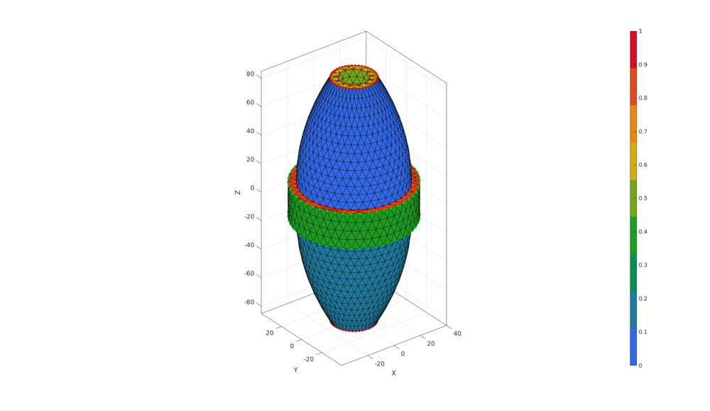
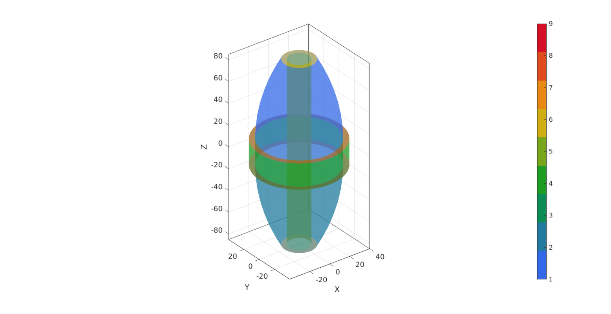
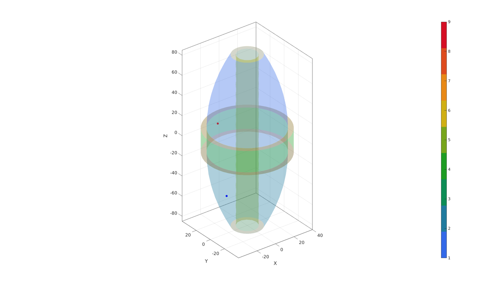
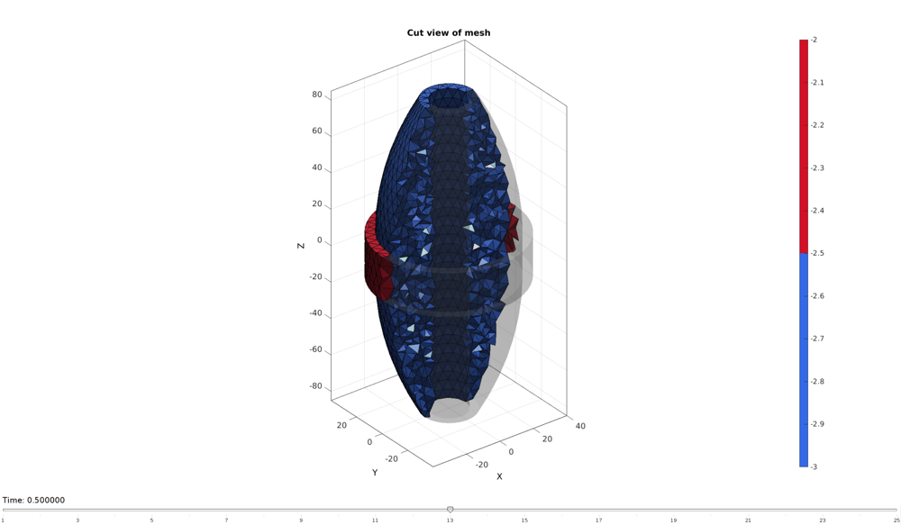
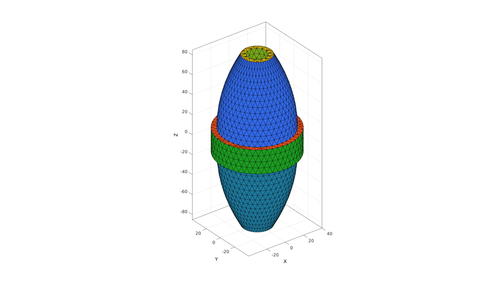
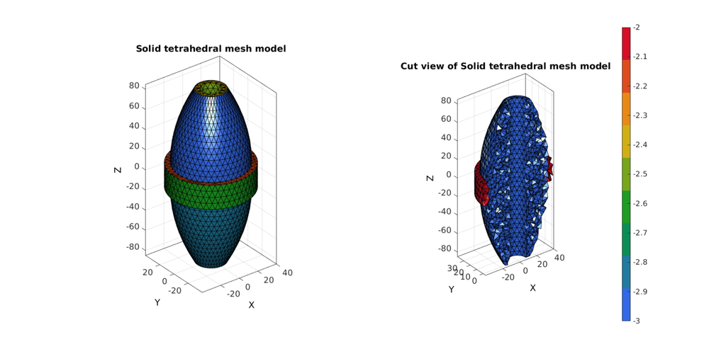
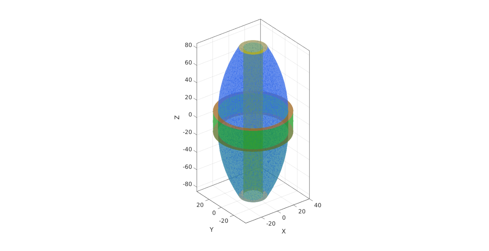
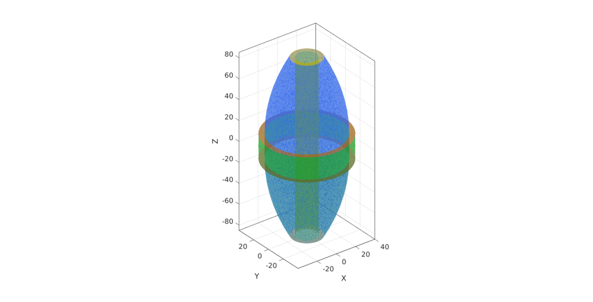
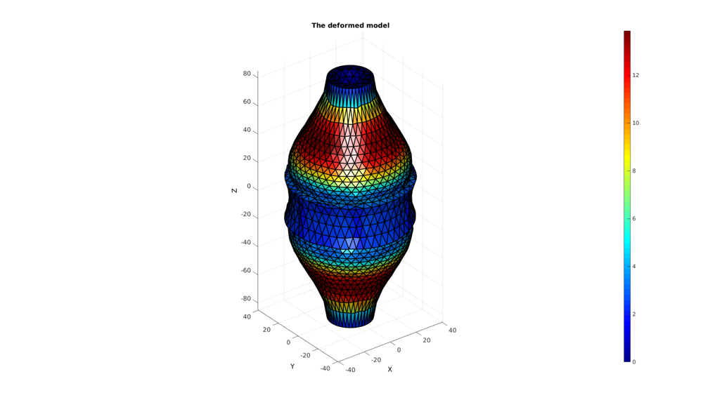

DEMO_FEBio_multigen_interface_active
Contents
- Build tissue skin surface top
- Build tissue skin surface bottom
- Build tissue skin surface middle
- Build wrap outer surface
- Build bone surface
- Capping tissue top
- Capping tissue bottom
- Capping wrap top
- Capping wrap bottom
- Visualizing surface geometry
- Joining and merging geometry sets
- Find solid mesh region interior points
- Mesh solid using tetgen
- Visualizing mesh
- Visualizing cut-view of solid mesh
- Define boundary condition node sets
- Define pressure surface
- Create element sets and material indices
- DEFINE FIBRE DIRECTIONS
- CONSTRUCTING FEB MODEL
- SAVING .FEB FILE
- RUNNING FEBIO JOB
- IMPORTING NODAL DISPLACEMENT RESULTS
- CREATING NODE SET IN DEFORMED STATE
clear; close all; clc;
Plot settings
fontSize=15;
faceAlpha=1;
lineWidth1=1.5;
lineWidth2=3;
markerSize=25;
markerSize1=15;
markerSize2=30;
edgeWidth=2;
edgeColor='k';
faceAlpha1=1;
plotColors=gjet(9);
path names
defaultFolder = fileparts(fileparts(mfilename('fullpath'))); savePath=fullfile(defaultFolder,'data','temp');
Control parameters
% Material parameters c1=1e-3; m1=6; k_factor=50; k=c1*k_factor; T0=1e-2; c_g=[c1/1000 c1*100]; k_g=c_g*k_factor; % Geometry parameters tissueRadius=35; tissueHeight=170; boneRadius=10; wrapHeight=24; wrapThickness=5; pointSpacing=5; % Aproximate node spacing digitKeep=5; % FEA control settings nSteps=10; %Number of time steps desired max_refs=25; %Max reforms max_ups=0; %Set to zero to use full-Newton iterations opt_iter=6; %Optimum number of iterations max_retries=5; %Maximum number of retires dtmin=(1/nSteps)/100; %Minimum time step size dtmax=1/nSteps; %Maximum time step size
Build tissue skin surface top
%Sketching profile ns=150; t=linspace(0,2*pi,ns); t=t(1:end-1); x=tissueRadius*cos(t); y=tissueRadius*sin(t); z=zeros(size(x)); Vc=[x(:) y(:) z(:)]; np=ceil(max(pathLength(Vc))./pointSpacing); [Vc]=evenlySampleCurve(Vc,np,'pchip',1); % Extruding model h=(tissueHeight/2)-wrapHeight/2; cPar.numSteps=round(h/pointSpacing); cPar.numSteps=cPar.numSteps+iseven(cPar.numSteps); cPar.depth=h; cPar.patchType='tri'; cPar.dir=-1; cPar.closeLoopOpt=1; [Fg1,Vg1]=polyExtrude(Vc,cPar); Vg1(:,3)=Vg1(:,3)+tissueHeight/2; [T,R] = cart2pol(Vg1(:,1),Vg1(:,2)); R=R-(tissueRadius/1.25*((Vg1(:,3)-(wrapHeight/2))/(tissueHeight/2)).^2); [Vg1(:,1),Vg1(:,2)] = pol2cart(T,R); Vg1b=Vg1(cPar.numSteps:cPar.numSteps:end,:); Vg1t=Vg1(1:cPar.numSteps:end,:);
Build tissue skin surface bottom
Fg2=Fg1; Fg2=fliplr(Fg2); Vg2=Vg1; Vg2(:,3)=-Vg2(:,3); Vg2b=Vg2(cPar.numSteps:cPar.numSteps:end,:); Vg2t=Vg2(1:cPar.numSteps:end,:);
Build tissue skin surface middle
% Extruding model h=wrapHeight; cPar.numSteps=round(h/pointSpacing); cPar.numSteps=cPar.numSteps+iseven(cPar.numSteps); cPar.depth=h; cPar.patchType='tri'; cPar.closeLoopOpt=1; Vc_start=Vg1b; Vc_end=Vg2b; [Fg3,Vg3]=polyLoftLinear(Vc_start,Vc_end,cPar); % Vg3(:,3)=Vg3(:,3)+tissueHeight/2; Vg3b=Vg3(cPar.numSteps:cPar.numSteps:end,:); Vg3t=Vg3(1:cPar.numSteps:end,:);
Build wrap outer surface
ns=150; t=linspace(0,2*pi,ns); t=t(1:end-1); x=(tissueRadius+wrapThickness)*cos(t); y=(tissueRadius+wrapThickness)*sin(t); z=zeros(size(x)); Vc=[x(:) y(:) z(:)]; np=ceil(max(pathLength(Vc))./pointSpacing); [Vwt]=evenlySampleCurve(Vc,np,'pchip',1); Vwt(:,3)=mean(Vg3t(:,3)); Vwb=Vwt; Vwb(:,3)=Vwt(:,3)-wrapHeight; h=wrapHeight; cPar.numSteps=round(h/pointSpacing); cPar.numSteps=cPar.numSteps+iseven(cPar.numSteps); cPar.depth=h; cPar.patchType='tri'; cPar.closeLoopOpt=1; Vc_start=Vwt; Vc_end=Vwb; [Fw1,Vw1]=polyLoftLinear(Vc_start,Vc_end,cPar);
Build bone surface
x=boneRadius*cos(t); y=boneRadius*sin(t); z=zeros(size(x)); Vc=[x(:) y(:) z(:)]; np=ceil(max(pathLength(Vc))./pointSpacing); [Vc]=evenlySampleCurve(Vc,np,'pchip',1); % Extruding model cPar.numSteps=round(tissueHeight/pointSpacing); cPar.numSteps=cPar.numSteps+iseven(cPar.numSteps); cPar.depth=tissueHeight; cPar.patchType='tri'; cPar.dir=-1; cPar.closeLoopOpt=1; [Fb,Vb]=polyExtrude(Vc,cPar); Fb=fliplr(Fb); Vb(:,3)=Vb(:,3)+tissueHeight/2; Vbb=Vb(cPar.numSteps:cPar.numSteps:end,:); Vbt=Vb(1:cPar.numSteps:end,:);
Capping tissue top
regionCell={Vg1t(:,[1 2]),Vbt(:,[1 2])};
[Ft,Vt]=regionTriMesh2D(regionCell,pointSpacing,0,0);
Vt(:,3)=mean(Vg1t(:,3));
Ft=fliplr(Ft);
Capping tissue bottom
regionCell={Vg2t(:,[1 2]),Vbb(:,[1 2])};
[Fgb,Vgb]=regionTriMesh2D(regionCell,pointSpacing,0,0);
Vgb(:,3)=mean(Vg2t(:,3));
Capping wrap top
regionCell={Vwt(:,[1 2]),Vg1b(:,[1 2])};
[Fwtt,Vwtt]=regionTriMesh2D(regionCell,pointSpacing,0,0);
Vwtt(:,3)=mean(Vwt(:,3));
Fwtt=fliplr(Fwtt);
Capping wrap bottom
regionCell={Vwb(:,[1 2]),Vg2b(:,[1 2])};
[Fwbb,Vwbb]=regionTriMesh2D(regionCell,pointSpacing,0,0);
Vwbb(:,3)=mean(Vwb(:,3));
Visualizing surface geometry
cFigure; xlabel('X','FontSize',fontSize); ylabel('Y','FontSize',fontSize); zlabel('Z','FontSize',fontSize) hold on; gpatch(Fg1,Vg1,plotColors(1,:),'k'); patchNormPlot(Fg1,Vg1); plotV(Vg1t,'r.-','lineWidth',lineWidth1,'MarkerSize',markerSize1); plotV(Vg1b,'y.-','lineWidth',lineWidth1,'MarkerSize',markerSize1); gpatch(Fg2,Vg2,plotColors(2,:),'k'); patchNormPlot(Fg2,Vg2); plotV(Vg2t,'r.-','lineWidth',lineWidth1,'MarkerSize',markerSize1); plotV(Vg2b,'y.-','lineWidth',lineWidth1,'MarkerSize',markerSize1); gpatch(Fg3,Vg3,plotColors(3,:),'k'); patchNormPlot(Fg3,Vg3); plotV(Vg3t,'r.-','lineWidth',lineWidth1,'MarkerSize',markerSize1); plotV(Vg3b,'y.-','lineWidth',lineWidth1,'MarkerSize',markerSize1); gpatch(Fw1,Vw1,plotColors(4,:),'k'); patchNormPlot(Fw1,Vw1); plotV(Vwt,'g.-','lineWidth',lineWidth1,'MarkerSize',markerSize1); plotV(Vwb,'g.-','lineWidth',lineWidth1,'MarkerSize',markerSize1); gpatch(Fb,Vb,plotColors(5,:),'k'); patchNormPlot(Fb,Vb); plotV(Vbt,'r.-','lineWidth',lineWidth1,'MarkerSize',markerSize1); plotV(Vbb,'y.-','lineWidth',lineWidth1,'MarkerSize',markerSize1); gpatch(Ft,Vt,plotColors(6,:),'k'); patchNormPlot(Ft,Vt); gpatch(Fgb,Vgb,plotColors(7,:),'k'); patchNormPlot(Fgb,Vgb); gpatch(Fwtt,Vwtt,plotColors(8,:),'k'); patchNormPlot(Fwtt,Vwtt); gpatch(Fwbb,Vwbb,plotColors(9,:),'k'); patchNormPlot(Fwbb,Vwbb); axisGeom; colormap(plotColors); colorbar; drawnow;
Joining and merging geometry sets
%Joining sets %Creating color information Cg1=1*ones(size(Fg1,1),1); %Tissue top cylinder Cg2=2*ones(size(Fg2,1),1); %Tissue bottom cylinder Cg3=3*ones(size(Fg3,1),1); %Tissue middle cylinder Cw1=4*ones(size(Fw1,1),1); %Wrap outer cylinder Cb=5*ones(size(Fb,1),1); %Bone cylinder Ct=6*ones(size(Ft,1),1); %Tissue top Cgb=7*ones(size(Fgb,1),1); %Tissue bottom Cwtt=8*ones(size(Fwtt,1),1); %Wrap top Cwbb=9*ones(size(Fwbb,1),1); %Wrap bottom [F,V,C]=joinElementSets({Fg1,Fg2,Fg3,Fw1,Fb,Ft,Fgb,Fwtt,Fwbb},{Vg1,Vg2,Vg3,Vw1,Vb,Vt,Vgb,Vwtt,Vwbb},{Cg1,Cg2,Cg3,Cw1,Cb,Ct,Cgb,Cwtt,Cwbb}); %joining sets together %merging sets [~,indUni,indFix]=unique(pround(V,digitKeep),'rows'); V=V(indUni,:); %The merged point set F=indFix(F);
cFigure; xlabel('X','FontSize',fontSize); ylabel('Y','FontSize',fontSize); zlabel('Z','FontSize',fontSize) hold on; gpatch(F,V,C,'none',0.5); % patchNormPlot(F,V); axisGeom; colormap(plotColors); colorbar; drawnow;
Find solid mesh region interior points
logicRegion=ismember(C,[3 4 8 9]); [V_in_1]=getInnerPoint(F(logicRegion,:),V); logicRegion=ismember(C,[1 2 3 5 6 7 ]); [V_in_2]=getInnerPoint(F(logicRegion,:),V); V_regions=[V_in_1;V_in_2];
cFigure; xlabel('X','FontSize',fontSize); ylabel('Y','FontSize',fontSize); zlabel('Z','FontSize',fontSize) hold on; gpatch(F,V,C,'none',0.2); plotV(V_in_1,'r.','MarkerSize',25); plotV(V_in_2,'b.','MarkerSize',25); axisGeom; colormap(plotColors); colorbar; drawnow;
Mesh solid using tetgen
% Create tetgen meshing input structure modelName=fullfile(savePath,'tempModel'); % Regional mesh volume parameter [regionA]=tetVolMeanEst(F,V); %Volume for a regular tet based on edge lengths volumeFactors=(regionA.*ones(size(V_regions,1),1)); inputStruct.stringOpt='-pq1.2AaY'; inputStruct.Faces=F; inputStruct.Nodes=V; inputStruct.holePoints=[]; inputStruct.faceBoundaryMarker=C; %Face boundary markers inputStruct.regionPoints=V_regions; %region points inputStruct.regionA=volumeFactors; %Desired volume for tets inputStruct.minRegionMarker=2; %Minimum region marker inputStruct.modelName=modelName;
Mesh model using tetrahedral elements using tetGen (see: http://wias-berlin.de/software/tetgen/)
[meshOutput]=runTetGen(inputStruct); %Run tetGen
%%%%%%%%%%%%%%%%%%%%%%%%%%%%%%%%%%%%%%%%%%%%% --- TETGEN Tetrahedral meshing --- 21-Dec-2017 14:05:06 %%%%%%%%%%%%%%%%%%%%%%%%%%%%%%%%%%%%%%%%%%%%% --- Writing SMESH file --- 21-Dec-2017 14:05:06 ----> Adding node field ----> Adding facet field ----> Adding holes specification ----> Adding region specification --- Done --- 21-Dec-2017 14:05:06 --- Running TetGen to mesh input boundary--- 21-Dec-2017 14:05:06 Opening /mnt/data/MATLAB/GIT/GIBBON/lib_ext/tetGen/tempFiles/tempModel.smesh. Delaunizing vertices... Delaunay seconds: 0.036952 Creating surface mesh ... Surface mesh seconds: 0.006803 Recovering boundaries... Boundary recovery seconds: 0.008551 Removing exterior tetrahedra ... Spreading region attributes. Exterior tets removal seconds: 0.004767 Recovering Delaunayness... Delaunay recovery seconds: 0.004247 Refining mesh... Refinement seconds: 0.245233 Optimizing mesh... Optimization seconds: 0.027321 Writing /mnt/data/MATLAB/GIT/GIBBON/lib_ext/tetGen/tempFiles/tempModel.1.node. Writing /mnt/data/MATLAB/GIT/GIBBON/lib_ext/tetGen/tempFiles/tempModel.1.ele. Writing /mnt/data/MATLAB/GIT/GIBBON/lib_ext/tetGen/tempFiles/tempModel.1.face. Writing /mnt/data/MATLAB/GIT/GIBBON/lib_ext/tetGen/tempFiles/tempModel.1.edge. Output seconds: 0.080903 Total running seconds: 0.415012 Statistics: Input points: 2189 Input facets: 4466 Input segments: 6655 Input holes: 0 Input regions: 2 Mesh points: 7477 Mesh tetrahedra: 41110 Mesh faces: 84277 Mesh faces on exterior boundary: 4114 Mesh faces on input facets: 4466 Mesh edges on input segments: 6655 Steiner points inside domain: 5288 --- Done --- 21-Dec-2017 14:05:07 %%%%%%%%%%%%%%%%%%%%%%%%%%%%%%%%%%%%%%%%%%%%% --- Importing TetGen files --- 21-Dec-2017 14:05:07 --- Done --- 21-Dec-2017 14:05:07
Visualizing mesh
meshView(meshOutput);
Access model element and patch data
F=meshOutput.faces; V=meshOutput.nodes; C=meshOutput.faceMaterialID; E=meshOutput.elements; CE=meshOutput.elementMaterialID; Fb=meshOutput.facesBoundary; Cb=meshOutput.boundaryMarker;
cFigure; xlabel('X','FontSize',fontSize); ylabel('Y','FontSize',fontSize); zlabel('Z','FontSize',fontSize) hold on; gpatch(Fb,V,Cb); axisGeom; colormap(plotColors) drawnow;
Visualizing cut-view of solid mesh
%Selecting half of the model to see interior Y=V(:,2); YE=mean(Y(E),2); L=YE>mean(Y); [Fs,Cs]=element2patch(E(L,:),CE(L),'tet4'); hf1=cFigure; subplot(1,2,1); title('Solid tetrahedral mesh model','FontSize',fontSize); gpatch(Fb,V,Cb); axisGeom; colormap(plotColors); camlight headlight; set(gca,'FontSize',fontSize); subplot(1,2,2); title('Cut view of Solid tetrahedral mesh model','FontSize',fontSize); gpatch(Fs,V,Cs); axisGeom; colormap(plotColors); colorbar; camlight headlight; set(gca,'FontSize',fontSize); drawnow;
Define boundary condition node sets
logicRigid=ismember(Cb,[5 6 7]); indRigid=Fb(logicRigid,:); indRigid=unique(indRigid(:));
Define pressure surface
F_pressure=fliplr(Fb(Cb==3,:));
Plot boundary condition nodes
cFigure; xlabel('X','FontSize',fontSize); ylabel('Y','FontSize',fontSize); zlabel('Z','FontSize',fontSize) hold on; gpatch(Fb,V,Cb,'none',0.5); plotV(V(indRigid,:),'k.','lineWidth',lineWidth1,'MarkerSize',markerSize1); gpatch(F_pressure,V,0.5*ones(1,3),'k'); axisGeom; colormap(plotColors); drawnow;
Create element sets and material indices
%Create material indices elementMaterialIndices=CE; elementMaterialIndices(elementMaterialIndices==-3)=1; elementMaterialIndices(elementMaterialIndices==-2)=2; %Order material sets E1=E(elementMaterialIndices==1,:); %Tissue material E2=E(elementMaterialIndices==2,:); %Wrap material
DEFINE FIBRE DIRECTIONS
v_fib=[0 0 1]; V_fib=v_fib(ones(size(E1,1),1),:); X=V(:,1); Y=V(:,2); Z=V(:,3); VE=[mean(X(E1),2) mean(Y(E1),2) mean(Z(E1),2)];
Plot fibre directions
cFigure; xlabel('X','FontSize',fontSize); ylabel('Y','FontSize',fontSize); zlabel('Z','FontSize',fontSize) hold on; gpatch(Fb,V,Cb,'none',0.5); quiverVec(VE,V_fib,1); axisGeom; colormap(plotColors); drawnow;
CONSTRUCTING FEB MODEL
FEB_struct.febio_spec.version='2.0'; FEB_struct.Module.Type='solid'; % Defining file names FEB_struct.run_filename=[modelName,'.feb']; %FEB file name FEB_struct.run_logname=[modelName,'.txt']; %FEBio log file name %Creating FEB_struct FEB_struct.Geometry.Nodes=V; FEB_struct.Geometry.Elements={E1,E2}; %The element sets FEB_struct.Geometry.ElementType={'tet4','tet4'}; %The element types FEB_struct.Geometry.ElementMat={elementMaterialIndices(elementMaterialIndices==1); elementMaterialIndices(elementMaterialIndices==2)}; FEB_struct.Geometry.ElementsPartName={'Tissue','Wrap'}; %Adding fibre direction, construct local orthonormal basis vectors [a,d]=vectorOrthogonalPair(V_fib); VF_E=zeros(size(V_fib,1),size(V_fib,2),2); VF_E(:,:,1)=a; %a1 ~ e1 ~ X or first direction VF_E(:,:,2)=d; %a2 ~ e2 ~ Y or second direction %Vf_E %a3 ~ e3 ~ Z, third direction, or fibre direction FEB_struct.Geometry.ElementData.MatAxis.ElementIndices=1:1:size(E1,1); FEB_struct.Geometry.ElementData.MatAxis.Basis=VF_E; % DEFINING MATERIALS %Material section % FEB_struct.Materials{1}.Type='Ogden'; % FEB_struct.Materials{1}.Name='Tissue_material'; % FEB_struct.Materials{1}.Properties={'c1','m1','c2','m2','k'}; % FEB_struct.Materials{1}.Values={c1,m1,c1,-m1,k}; FEB_struct.Materials{1}.Type='solid mixture'; % FEB_struct.Materials{1}.AnisoType='mat_axis'; FEB_struct.Materials{1}.Solid{1}.Type='Ogden unconstrained'; FEB_struct.Materials{1}.Solid{1}.Properties={'c1','m1','c1','m1','cp'}; FEB_struct.Materials{1}.Solid{1}.Values={c1,m1,c1,-m1,k}; FEB_struct.Materials{1}.Solid{2}.Type='prescribed uniaxial active contraction'; FEB_struct.Materials{1}.Solid{2}.Properties={'T0','theta','phi'}; FEB_struct.Materials{1}.Solid{2}.Values={T0,0,0}; FEB_struct.Materials{1}.Solid{2}.AnisoType='mat_axis'; FEB_struct.Materials{1}.Solid{2}.PropAttrName=cell(1,numel(FEB_struct.Materials{1}.Solid{2}.Properties)); FEB_struct.Materials{1}.Solid{2}.PropAttrName{1}='lc'; FEB_struct.Materials{1}.Solid{2}.PropAttrVal{1}=2; FEB_struct.Materials{2}.Type='multigeneration'; FEB_struct.Materials{2}.Name='Deformable block'; FEB_struct.Materials{2}.Generation{1}.Solid{1}.Type='Ogden unconstrained'; FEB_struct.Materials{2}.Generation{1}.Solid{1}.Properties={'c1','m1','c2','m2','cp'}; FEB_struct.Materials{2}.Generation{1}.Solid{1}.Values={c_g(1),2,c_g(1),-2,k_g(1)}; FEB_struct.Materials{2}.Generation{1}.Properties={'start_time'}; FEB_struct.Materials{2}.Generation{1}.Values={0}; FEB_struct.Materials{2}.Generation{2}.Solid{1}.Type='Ogden unconstrained'; FEB_struct.Materials{2}.Generation{2}.Solid{1}.Properties={'c1','m1','c2','m2','cp'}; FEB_struct.Materials{2}.Generation{2}.Solid{1}.Values={c_g(2),2,c_g(2),-2,k_g(2)}; FEB_struct.Materials{2}.Generation{2}.Properties={'start_time'}; FEB_struct.Materials{2}.Generation{2}.Values={1}; %Control section FEB_struct.Step{1}.Control.AnalysisType='static'; FEB_struct.Step{1}.Control.Properties={'time_steps','step_size',... 'max_refs','max_ups',... 'dtol','etol','rtol','lstol'}; FEB_struct.Step{1}.Control.Values={nSteps,1/nSteps,... max_refs,max_ups,... 0.001,0.01,0,0.9}; FEB_struct.Step{1}.Control.TimeStepperProperties={'dtmin','dtmax','max_retries','opt_iter'}; FEB_struct.Step{1}.Control.TimeStepperValues={dtmin,dtmax,max_retries,opt_iter}; FEB_struct.Step{2}.Control=FEB_struct.Step{1}.Control; FEB_struct.Step{3}.Control=FEB_struct.Step{1}.Control; %Defining node sets FEB_struct.Geometry.NodeSet{1}.Set=indRigid; FEB_struct.Geometry.NodeSet{1}.Name='indRigid'; %Defining surfaces FEB_struct.Geometry.Surface{1}.Set=F_pressure; FEB_struct.Geometry.Surface{1}.Type='tri3'; FEB_struct.Geometry.Surface{1}.Name='Pressure_surface'; %Adding BC information FEB_struct.Boundary.Fix{1}.bc='x'; FEB_struct.Boundary.Fix{1}.SetName=FEB_struct.Geometry.NodeSet{1}.Name; FEB_struct.Boundary.Fix{2}.bc='y'; FEB_struct.Boundary.Fix{2}.SetName=FEB_struct.Geometry.NodeSet{1}.Name; FEB_struct.Boundary.Fix{3}.bc='z'; FEB_struct.Boundary.Fix{3}.SetName=FEB_struct.Geometry.NodeSet{1}.Name; FEB_struct.Loads.Surface_load{1}.Type='pressure'; % FEB_struct.Loads.Surface_load{1}.Set=F1; FEB_struct.Loads.Surface_load{1}.SetName=FEB_struct.Geometry.Surface{1}.Name; FEB_struct.Loads.Surface_load{1}.lcPar='pressure'; FEB_struct.Loads.Surface_load{1}.lcParValue=2e-3; FEB_struct.Loads.Surface_load{1}.lc=1; %Load curves FEB_struct.LoadData.LoadCurves.id=[1 2]; FEB_struct.LoadData.LoadCurves.type={'linear','linear'}; FEB_struct.LoadData.LoadCurves.loadPoints={[0 0;1 1;2 0;3 0;]; [0 0;1 0;2 0;3 1;]}; %Adding output requests FEB_struct.Output.VarTypes={'displacement','stress','relative volume'}; %Specify log file output run_node_output_name=[FEB_struct.run_filename(1:end-4),'_node_out.txt']; FEB_struct.run_output_names={run_node_output_name}; FEB_struct.output_types={'node_data'}; FEB_struct.data_types={'ux;uy;uz'};
SAVING .FEB FILE
FEB_struct.disp_opt=0; %Display waitbars option
febStruct2febFile(FEB_struct);
%%%%%%%%%%%%%%%%%%%%%%%%%%%%%%%%%%%%%%%%%%%%% --- Writing FEBio XML object --- 21-Dec-2017 14:05:11 Adding Module level Adding Globals level Adding Material level Adding Geometry level ----> Adding node field ----> Adding element field ----> Adding tet4 element entries.... ----> Adding tet4 element entries.... ----> Adding element data field ----> MatAxis data entries found ----> Adding surface field ----> Adding NodeSet field Adding Boundary level ----> Defining fix type boundary conditions Adding Loads level ----> Defining surface loads Adding LoadData level ----> Defining load curves Adding Step level ----> Adding Module field ----> Adding Control field Adding Step level ----> Adding Module field ----> Adding Control field Adding Step level ----> Adding Module field ----> Adding Control field Adding Output level ----> Adding plotfile field ----> Adding logfile field Warning: Provided path of logfile is replaced by .feb file path. Only provide filename to avoid this warning Writing .feb file --- Done --- 21-Dec-2017 14:05:40
RUNNING FEBIO JOB
% FEBioRunStruct.FEBioPath='C:\Program Files\febio2-2.2.6\bin\febio2.exe'; FEBioRunStruct.run_filename=FEB_struct.run_filename; FEBioRunStruct.run_logname=FEB_struct.run_logname; FEBioRunStruct.disp_on=1; FEBioRunStruct.disp_log_on=1; FEBioRunStruct.runMode='external';%'internal'; FEBioRunStruct.t_check=0.25; %Time for checking log file (dont set too small) FEBioRunStruct.maxtpi=1e99; %Max analysis time FEBioRunStruct.maxLogCheckTime=30; %Max log file checking time [runFlag]=runMonitorFEBio(FEBioRunStruct);%START FEBio NOW!!!!!!!!
%%%%%%%%%%%%%%%%%%%%%%%%%%%%%%%%%%%%%%%%%%%%% --- STARTING FEBIO JOB --- 21-Dec-2017 14:05:40 Waiting for log file... Proceeding to check log file...21-Dec-2017 14:05:41 ------- converged at time : 0.1 ------- converged at time : 0.2 ------- converged at time : 0.3 ------- converged at time : 0.4 ------- converged at time : 0.5 ------- converged at time : 0.6 ------- converged at time : 0.7 ------- converged at time : 0.8 ------- converged at time : 0.9 ------- converged at time : 0.992656 ------- converged at time : 1 ------- converged at time : 1.1 ------- converged at time : 1.2 ------- converged at time : 1.3 ------- converged at time : 1.4 ------- converged at time : 1.5 ------- converged at time : 1.6 ------- converged at time : 1.7 ------- converged at time : 1.8 ------- converged at time : 1.9 ------- converged at time : 2 ------- converged at time : 2.1 ------- converged at time : 2.2 ------- converged at time : 2.3 ------- converged at time : 2.4 ------- converged at time : 2.5 ------- converged at time : 2.6 ------- converged at time : 2.7 ------- converged at time : 2.8 ------- converged at time : 2.9 ------- converged at time : 3 --- Done --- 21-Dec-2017 14:07:00
IMPORTING NODAL DISPLACEMENT RESULTS
Importing nodal displacements from a log file
[~, N_disp_mat,~]=importFEBio_logfile(FEB_struct.run_output_names{1}); %Nodal displacements
DN=N_disp_mat(:,2:end,end); %Final nodal displacements
CREATING NODE SET IN DEFORMED STATE
V_def=V+DN; DN_magnitude=sqrt(sum(DN.^2,2));
Plotting the deformed model
[CF]=vertexToFaceMeasure(F,DN_magnitude); cFigure; title('The deformed model','FontSize',fontSize); xlabel('X','FontSize',fontSize); ylabel('Y','FontSize',fontSize); zlabel('Z','FontSize',fontSize); hold on; hps=patch('Faces',F,'Vertices',V_def,'FaceColor','flat','CData',CF,'lineWidth',edgeWidth,'edgeColor',edgeColor,'FaceAlpha',faceAlpha1); view(3); axis tight; axis equal; grid on; colormap jet; colorbar; camlight headlight; set(gca,'FontSize',fontSize); drawnow;

GIBBON www.gibboncode.org
Kevin Mattheus Moerman, gibbon.toolbox@gmail.com
GIBBON footer text
License: https://github.com/gibbonCode/GIBBON/blob/master/LICENSE
GIBBON: The Geometry and Image-based Bioengineering add-On. A toolbox for image segmentation, image-based modeling, meshing, and finite element analysis.
Copyright (C) 2017 Kevin Mattheus Moerman
This program is free software: you can redistribute it and/or modify it under the terms of the GNU General Public License as published by the Free Software Foundation, either version 3 of the License, or (at your option) any later version.
This program is distributed in the hope that it will be useful, but WITHOUT ANY WARRANTY; without even the implied warranty of MERCHANTABILITY or FITNESS FOR A PARTICULAR PURPOSE. See the GNU General Public License for more details.
You should have received a copy of the GNU General Public License along with this program. If not, see http://www.gnu.org/licenses/.